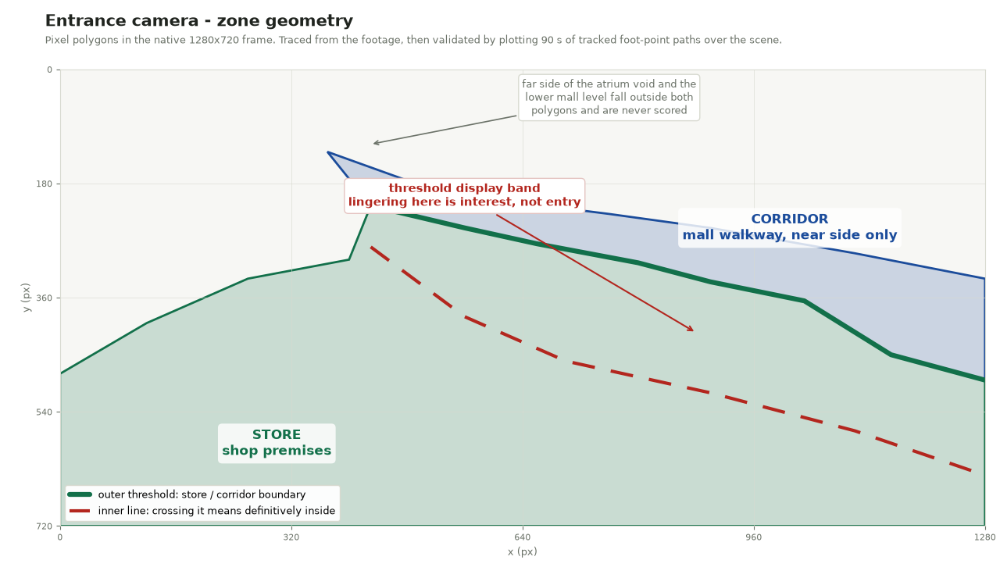
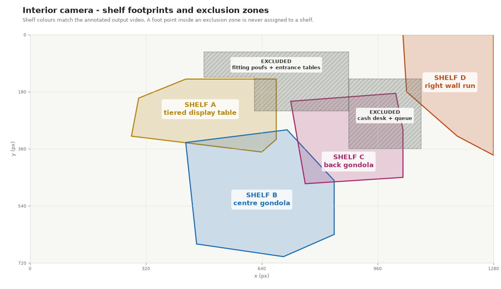

Retail Video Analytics: Customer Behaviour from CCTV¶
Status: Completed | Repository: Private | Runtime: CPU-only, Dockerised
Overview¶
An end-to-end video analytics pipeline that turns two retail CCTV cameras into behavioural metrics: how many passers-by show interest in a store and how many of them actually walk in, which shelves customers engage with and how often, and how many genuine staff-to-customer interactions take place.
Everything runs locally on CPU. No cloud inference, no footage leaving the machine, and the whole pipeline reproduces from a single Docker command.
The interesting part of this project is not the detector. It is everything between a bounding box and a defensible number: what counts as interest, where the store actually begins, which detections must be thrown away, and how to tell a customer browsing a shelf apart from a customer walking past one.
The Problem¶
Person detection on retail CCTV is close to solved. Turning detections into business metrics is not, because every metric hides a definition question:
- A shopper slows down at the window and walks on. Interested, or just walking?
- A shopper steps into the display band at the entrance, picks up a sandal, and leaves. Entered, or not?
- A customer stands between two gondolas. Which shelf are they engaging with?
- A staff member and a customer are two metres apart for ten seconds. Service interaction, or coincidence?
Each of these was resolved against the footage and then written down, because a number without its definition cannot be audited.
Architecture¶
The pipeline splits at the expensive boundary:
flowchart LR
V["raw video<br/>2 cameras, 1280x720, 30 fps"] --> D
subgraph S1["Stage 1: perception, run once"]
D["YOLO11m detection<br/>person class, imgsz 1280, conf 0.20"] --> T["ByteTrack<br/>ID persistence"]
T --> C[("track cache<br/>one row per frame x track<br/>gzip CSV + JSON sidecar")]
end
C --> S2
Z["zones.yaml<br/>scene geometry"] --> S2
subgraph S2["Stage 2: event logic, iterate freely"]
T1["store interest<br/>and conversion"]
T2["per-shelf<br/>engagement"]
T3["staff-customer<br/>interaction"]
end
S2 --> M["metric CSVs"]
S2 --> R["annotated videos"]Stage 1 costs roughly 80 to 90 CPU-minutes across both videos. Stage 2 costs seconds. That split exists for one reason: behavioural thresholds need dozens of tuning iterations against the footage, and re-running inference for each one would have made the tuning impossible on CPU. Caching perception turned a multi-hour loop into a multi-second one.
Model selection¶
Person detection was spot-checked across the YOLO11 family on frames from both
cameras, COCO-pretrained, person class only, imgsz=1280:
| Model | ms/frame (CPU) | Scene behaviour |
|---|---|---|
| yolo11n | ~107 | Misses partially occluded and back-turned people |
| yolo11s | ~225 | Missed a clearly visible back-turned customer |
| yolo11m | ~520 to 600 | Detected everyone in spot-checks, including occluded |
yolo11m was chosen as the smallest model with adequate recall on this footage. An OpenVINO export was benchmarked as a potential CPU speedup and came out slower than PyTorch on the development CPU, 660 versus 521 ms/frame, so PyTorch inference was kept. Detection confidence sits at 0.20, deliberately low, because ByteTrack's two-stage association handles low-confidence boxes well and the hard cases (back-turned browsers) scored 0.3 to 0.5 in spot-checks.
Temporal sampling¶
Video is 30 fps; every third frame is processed, for 10 fps effective. A mall walker takes at least four seconds to cross the view, so a crossing still yields 40 or more tracked samples. This keeps tracking reliable while cutting CPU cost by 3x. Cache frame indices stay native (0, 3, 6, ...) so the output videos still render at full 30 fps with annotations interpolated between processed frames.
Scene Geometry¶
All zones are pixel polygons in the native 1280x720 frame, drawn against reference frames and then validated by plotting 90 seconds of real tracked foot-point paths over the scene.

The entrance camera looks from inside the store, across the open storefront, onto a mall corridor that rings an atrium void. Three decisions matter here:
- The corridor polygon is the near side only. Its upper edge follows the atrium balustrade, which removes two confounders that are plainly visible in frame: people walking the far side of the void, and the lower mall level seen through it. Attention from across a void is not store interest.
- The threshold was traced from the footage, not from the furniture. Pedestrians squeeze tightly behind the threshold displays, so the line follows the observed walk-lane lower envelope. A naive furniture-based line misclassified through-walkers as entering.
- A second inner line sits past the threshold display band. The band between the two lines is exactly where corridor browsers linger without meaningfully entering, which is what makes "interested but did not enter" measurable.

The interior camera covers four fixtures. The exclusion zones are the interesting part: a first full-video pass showed the fitting poufs, the entrance display tables, and the cash-desk surroundings generating false shelf events, because seated customers, checkout queues, and counter staff all snap to the nearest shelf footprint otherwise.
Store Interest and Walk-In Conversion¶
Only a track that appears in the corridor before any store presence is scored as a passer-by, so people already inside, staff, and store-to-corridor exits never enter the count. Staff tracks are excluded entirely.
Interest fires on any of three cues, all normalised by bounding-box height so that mall perspective cancels out. Normal walking measures 1.5 to 2.5 body heights per second in this footage:
- Slowdown: speed below 0.45 h/s sustained 1.5 s within 140 px of the threshold.
- Approach: distance to the threshold drops by at least 0.6 body heights over 1.5 s, ending inside the 140 px band, with the person in the corridor for most of the window.
- Threshold browsing: lingering below 0.45 h/s for at least 1.2 s inside the display band. The speed condition is what stops a walker whose path merely clips the band from counting.
Entered means crossing past the inner boundary for a sustained 0.6 s, or spending 8 s or more inside the store polygon. Entering implies interest. Passed by means interested and never entered.
| Metric | Count |
|---|---|
| Total interested | 8 |
| Interested, entered | 3 |
| Interested, passed by | 5 |
Entrance camera, 25 s excerpt of the annotated output. Green boxes mark people classified as having entered, the coloured lines are tracked trajectories, and the running counters top-left update as events fire. Every detected person is pixelated; the boxes, labels and trajectories are the pipeline's own output and are untouched.
Per-Shelf Engagement¶
Assignment uses the torso point, not the feet. Each customer is assigned to the nearest shelf by bounding-box centre-x at 25% height, within a reach of 0.35 body heights. The torso point replaced the foot point after a visual audit: a browsing customer's feet stay in the shared aisle while their upper body leans into the fixture they are actually engaged with. In one verified case, two customers shifted from browsing shelf B to shelf C without their feet ever leaving B's reach. This is also the working answer to "which shelf does a customer standing between two shelves belong to".
Events open when one shelf's assignment persists for 2.0 s with median speed below 0.35 h/s, which is well under walking pace. An event continues while the shelf stays assigned at any speed, bridging dropouts of up to 3.0 s for occlusion or a step back to look. Absence beyond 3.0 s closes it, and a later return to the same shelf is a new event. Dwell on a new shelf accumulates during the previous event's grace window, so quick shelf switches are not lost.
| Shelf | Fixture | Interest events |
|---|---|---|
| A | Tiered display table | 3 |
| B | Centre gondola | 5 |
| C | Back gondola | 5 |
| D | Right wall shelf run | 4 |
Interior camera, 25 s excerpt. Shelf footprints are drawn in the same colours as the geometry diagram above; a customer's box turns that shelf's colour once an engagement event opens, with the running dwell time beside it.
Staff-Customer Interaction¶
Staff identification: the approach that was measured and discarded¶
An apron-colour classifier using torso HSV voting was built first, then retired after measurement. Under this footage's warm lighting, customer clothing and skin tones overlap the apron hue range, so colour could not separate the classes reliably. Building it was not wasted: it established that the obvious signal does not work here, which is what justified the spatial rule that replaced it.
The deployed rule is spatial. Only staff go behind the cash desk, and the desk clips their feet to the bottom frame edge, which gives a clean separation: staff foot y sits at 656 to 720, while customers approaching the desk front sit at 490 to 650. Two seconds or more in the anchor zone means staff. A small auditable override file covers documented exceptions, such as an apron-wearing server who appears for 1.4 s at the end of the video and never reaches the desk.
Because the desk also occludes staff entirely for stretches, a second track-stitching tier merges deep-store stationary reappearances. Without it, one staff member fragmented into seven separate instances.
Sessions¶
A session is mutual proximity below 1.3 mean body heights, both parties inside the store, sustained for 4 s or more. Dropouts up to 4 s bridge into the same session, longer separation closes it, and a reunion counts as a new session. Sessions are per (staff, customer) pair, so one staff member serving two customers at once holds two concurrent sessions.
Positions are compared on a common 10 Hz grid, and interpolation never bridges a dropout longer than 1 s. That guard exists because interpolating across a 40 s dropout was observed to fabricate a phantom session before it was added.
| Staff instance | Interaction sessions |
|---|---|
| Staff 2 | 0 |
| Staff 1409 | 2 |
| Staff 1830 | 0 |
| Staff 3670 | 0 |
| Average | 0.50 |
The two counted sessions are a verified shoe-fitting episode at the sofa area, visible in the entrance clip above, where the session counters sit under the store-interest block. One known miss is documented rather than papered over: the family's checkout at the desk is uncounted because the staff member was fully occluded below the frame edge for that window, so there is no visual evidence to score.
Technology¶
| Component | Choice | Why |
|---|---|---|
| Detection | YOLO11m (Ultralytics 8.4) | Smallest model with adequate recall here |
| Tracking | ByteTrack (via Ultralytics) | Strong ID persistence, handles low-conf boxes |
| Inference | PyTorch CPU | Faster than OpenVINO on this CPU (measured) |
| Video I/O | OpenCV | Bundled codecs, no system ffmpeg dependency |
| Data handling | pandas + gzip CSV caches | ~100k rows, portable, diffable schema |
| Config | YAML | Human-editable scene geometry |
| Packaging | Docker | Containerised run reproduces the CSVs exactly |
The Docker image was build- and run-verified on Docker Engine 29.1 under WSL2/Ubuntu 24.04: the containerised pipeline reproduces the committed metric CSVs byte for byte, and model weights download inside the container on first run.
Assumptions and Limitations¶
Stated plainly, because a behavioural metric without its failure modes is not a measurement:
- Identity persistence is per-video and per-appearance. Re-entry after leaving the view creates a new track.
- Head pose and gaze are not estimated. At CCTV distance and resolution, gaze estimation is unreliable, so interest is inferred from trajectory evidence (dwell, slowdown, approach, position relative to the storefront), which is both robust and explainable. This was a scope decision, not an omission.
- Effective detection runs at 10 fps, so sub-100 ms events are not resolvable.
- Heavy occlusion can fragment tracks; event logic uses debounce gaps to bridge short fragmentation, but a long fragmentation is a real miss.
- ByteTrack identity switches can blend two adjacent people into one track. One such case was observed and documented. Counts are per-track, so an undetected switch merges two people's behaviour.
- Staff-customer interactions are only countable while both parties are detectable. The cash desk fully occludes crouching staff, and one real interaction is missed for exactly that reason.
Skills Demonstrated¶
- Detection and tracking under real conditions: model family benchmarking on the actual footage rather than on a public benchmark, low-confidence detection paired with two-stage association, occlusion-aware track stitching
- Behavioural event modelling: turning trajectories into auditable events with explicit thresholds, debounce windows, and open/close semantics
- Scene geometry design: polygon ROIs validated against plotted real tracks, exclusion zones derived from observed false positives
- Perspective normalisation: speeds and distances in body-height units so a single threshold holds across the depth of the frame
- Measuring before committing: the apron-colour classifier and the OpenVINO export were both built, benchmarked, and rejected on evidence
- Reproducible CPU pipelines: cached perception stage, Dockerised execution, byte-identical outputs, no GPU required
Key Takeaways¶
-
Cache the expensive stage. Separating perception from event logic turned an impossible tuning loop into an interactive one. The architecture decision mattered more than any model choice.
-
Trace boundaries from behaviour, not from furniture. The storefront line that matched where people actually walk beat the line that matched where the shop physically starts.
-
Normalise by body height. One threshold then works across the whole frame depth, with no per-region tuning and no camera calibration.
-
The torso leads the feet. Assigning shelf engagement by foot position is the obvious choice and the wrong one, and only a frame-by-frame audit surfaces that.
-
Guard your interpolation. Filling a 40-second tracking gap invented an interaction that never happened. Interpolation is a claim about unobserved time and needs a limit.
-
Document the misses. The one uncounted checkout is in the write-up because a metric you cannot challenge is not a metric.
The clips above are short excerpts published with the footage owner's permission. Because the source is retail CCTV containing members of the public, every detected person is pixelated before encoding, using the bounding boxes already held in the pipeline's own track cache: each box is inset first so the rectangle, its label and the trajectory lines survive intact, and what the clip shows is the analytics output rather than the people it was computed from. The full recordings are not published and remain excluded from version control. The geometry diagrams are rendered from the project's configuration alone and contain no frames from the footage.